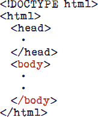
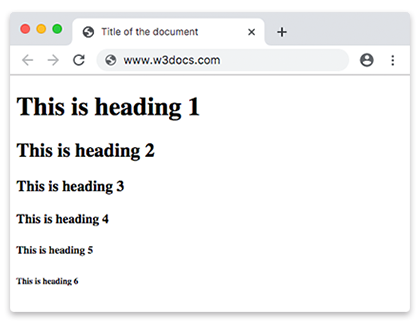
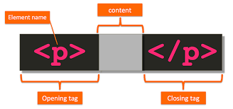
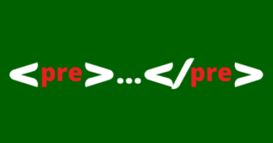

ProjetoHowto
Principais tags HTML:
Tag HTML

HTML (Linguagem de Marcação de HiperTexto) é o bloco de construção mais básico da web. Define o significado e a estrutura do conteúdo da web. Outras tecnologias além do HTML geralmente são usadas para descrever a aparência/apresentação (CSS) ou a funcionalidade/comportamento (JavaScript) de uma página da web
Para saber mais clique aqui...
Principais tags BODY
Tag BODY
O elemento body do HTML representa o conteúdo de um documento HTML. É permitido apenas um body por documento.
Para saber mais clique aqui...
Principais tags H1...H6
Tag H1...H6
Elementos de cabeçalho são implementados em seis níveis, h1 é o mais importante e h6 é o de menor importância. Um elemento de cabeçalho descreve brevemente o tópico da seção em que ele está. As informações de cabeçalho podem ser usadas por agentes de usuário, por exemplo, para construir uma tabela de conteúdos para um documento automaticamente. É permitido apenas um body por documento.
Para saber mais clique aqui...
Principais tags P
Tag P
O elemento HTML p representa um parágrafo. Em mídias visuais, parágrafos são representados como blocos indentados de texto com a primeira letra avançada e separados por linhas em branco. Já em HTML, parágrafos são usados para agrupar conteúdos relacionados de qualquer tipo, como imagens e campos de um formulário.
Para saber mais clique aqui...
Principais tag Div
Tag Div

O elemento de divisão HTML div é um container genérico para conteúdo de fluxo, que de certa forma não representa nada. Ele pode ser utilizado para agrupar elementos para fins de estilos (usando class ou id), ou porque eles compartilham valores de atributos, como lang. Ele deve ser utilizado somente quando não tiver outro elemento de semântica (tal como article ou nav).
Para saber mais clique aqui...
Principais tag Pre
Tag Pre
HTML texto preformatado pre é a tag utilizada para representar texto pré-formatado. Um texto dentro desse elemento é tipicamente exibido em uma fonte não proporcional da mesma maneira em que o texto original foi disposto no arquivo. Espaços em branco são mantidos no texto da mesma forma em que este foi digitado.
Para saber mais clique aqui...
Seletores CSS:
Seletor por tag
Este seletor básico escolhe todos os elementos que correspondem ao nome fornecido. Sintaxe: nome-da-tag Exemplo: input corresponderá a qualquer elemento input.
Para saber mais clique aqui...
Seletor por classe
Este seletor básico escolhe elementos baseados no valor de seu atributo classe. Sintaxe: .nome-da-classe Examplo: .index irá corresponder a qualquer elemento que tenha o índice de classe (provavelmente definido por um atributo class="index", ou similar).
Para saber mais clique aqui...
Seletor por id
Este seletor básico escolhe nós baseados no valor do atributo id. Deve existir apenas um elemento com o mesmo ID no mesmo documento. Sintaxe: #nome-do-id Exemplo: #toc irá corresponder ao elemento que possuir o id=toc (definido por um atributo id="toc", ou similar).
Para saber mais clique aqui...